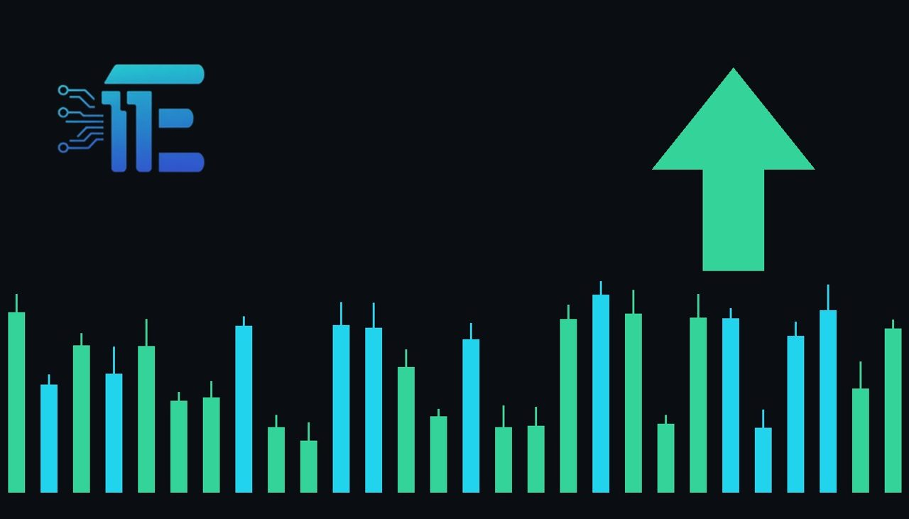

Ryanair Warns of Higher Airfares on Fuel Price Risksក្រុមហ៊ុន Ryanair ព្រមានពីការឡើងថ្លៃសំបុត្រយន្តហោះចំពេលមានហានិភ័យតម្លៃប្រេងឥន្ធនៈ
XAU/USD impact: ▲ Bullishផលប៉ះពាល់លើ XAU/USD: ▲ ឡើង

Ryanair says fuel prices may rise significantly unless there is an end to the US-Israel war with Iran. The risk of energy shocks and inflation pressures can increase safe-haven demand for gold.
ក្រុមហ៊ុន Ryanair ឱ្យដឹងថា តម្លៃប្រេងឥន្ធនៈអាចនឹងកើនឡើងខ្ពស់ ប្រសិនបើគ្មានការបញ្ចប់សង្គ្រាមរវាងសហរដ្ឋអាមេរិក អ៊ីស្រាអែល និងអ៊ីរ៉ង់។ ហានិភ័យនៃវិបត្តិថាមពលនិងអតិផរណាអាចជំរុញតម្រូវការមាសជាទីសុវត្ថិភាព។
Ryanair has stated that it may need to freeze workers' pay and raise airfares due to potential cost pressures. The airline warned that fuel prices could climb by two billion euros in 2028 unless there is an end to the ongoing conflict involving the US, Israel, and Iran.
ក្រុមហ៊ុន Ryanair បានប្រកាសថាខ្លួនអាចនឹងត្រូវបង្កើនការទប់ស្កាត់ប្រាក់ខែបុគ្គលិក និងដំឡើងថ្លៃសំបុត្រយន្តហោះ ដោយសារតែសម្ពាធចំណាយដែលមានសក្តានុពល។ ក្រុមហ៊ុនអាកាសចរណ៍នេះបានព្រមានថា តម្លៃប្រេងឥន្ធនៈអាចនឹងកើនឡើងដល់ ២ ពាន់លានអឺរ៉ូនៅឆ្នាំ ២០២៨ ប្រសិនបើមិនមានការបញ្ចប់ជម្លោះដែលពាក់ព័ន្ធនឹងសហរដ្ឋអាមេរិក អ៊ីស្រាអែល និងអ៊ីរ៉ង់នោះទេ។
This warning highlights the vulnerability of global energy markets to geopolitical tensions in the Middle East. Higher fuel costs serve as a direct transmission channel for broader economic inflation, impacting transportation and consumer goods sectors alike.
ការព្រមាននេះបង្ហាញពីភាពងាយរងគ្រោះនៃទីផ្សារថាមពលសកលចំពោះភាពតានតឹងផ្នែកភូមិសាស្ត្រនយោបាយក្នុងតំបន់មជ្ឈិមបូព៌ា។ ការឡើងថ្លៃប្រេងឥន្ធនៈគឺជាបណ្តាញបញ្ជូនផ្ទាល់ទៅកាន់អតិផរណាសេដ្ឋកិច្ចទូទៅ ដែលជះឥទ្ធិពលដល់វិស័យដឹកជញ្ជូននិងទំនិញប្រើប្រាស់។
For XAU/USD traders, energy shocks and escalating geopolitical conflicts typically boost safe-haven demand for precious metals. When inflation expectations rise due to surging commodity prices, gold often benefits as a traditional hedge against currency depreciation and economic uncertainty.
សម្រាប់អ្នកជួញដូរ XAU/USD វិបត្តិថាមពលនិងជម្លោះភូមិសាស្ត្រនយោបាយដែលកំពុងតែកើនឡើង ជាទូទៅជំរុញតម្រូវការមាសជាទីសុវត្ថិភាព។ នៅពេលដែលការរំពឹងទុកអតិផរណាកើនឡើងដោយសារតែតម្លៃទំនិញភោជនីយដ្ឋានឬថាមពលឡើងថ្លៃ មាសច្រើនតែទទួលបានផលប្រយោជន៍ជាទ្រព្យការពារប្រឆាំងនឹងការធ្លាក់ចុះតម្លៃប្រាក់និងភាពមិនច្បាស់លាស់សេដ្ឋកិច្ច។
However, if diplomatic efforts succeed in calming regional hostilities and oil prices stabilize, the safe-haven premium on gold could fade. In that scenario, broader market focus would shift back to central bank policy expectations and currency movements, potentially pressuring the metal.
ទោះជាយ៉ាងណាក៏ដោយ ប្រសិនបើកិច្ចខិតខំប្រឹងប្រែងផ្នែកការទូតទទួលបានជោគជ័យក្នុងការបន្ធូរបន្ថយភាពតានតឹងក្នុងតំបន់ និងតម្លៃប្រេងមានស្ថិរភាព តម្លៃបុព្វលាភសុវត្ថិភាពលើមាសអាចនឹងថយចុះ។ ក្នុងករណីនោះ ការផ្តោតអារម្មណ៍របស់ទីផ្សារទូទៅនឹងបង្វែរទៅរកការរំពឹងទុកលើគោលនយោបាយធនាគារកណ្តាល និងការផ្លាស់ប្តូររូបិយប័ណ្ណ ដែលអាចដាក់សម្ពាធលើលោហៈនេះវិញ។
Traders monitoring this situation should watch developments in Middle East diplomacy, crude oil price fluctuations, and broader inflation indicators. Any further escalation in regional conflicts that threatens energy supplies will likely remain a key driver for market liquidity and safe-haven assets.
អ្នកជួញដូរដែលតាមដានស្ថានការណ៍នេះគួរតែពិនិត្យមើលការវិវត្តនៃការទូតនៅមជ្ឈិមបូព៌ា ការប្រែប្រួលតម្លៃប្រេងឆៅ និងសូចនាករអតិផរណាទូទៅ។ និងទ្រព្យសុវត្ថិភាព។
Key takeawaysចំណុចសំខាន់ៗ
- Ryanair warns of rising fuel costs and airfares linked to Middle East conflict risks.
- ក្រុមហ៊ុន Ryanair ព្រមានពីការឡើងថ្លៃប្រេងឥន្ធនៈនិងសំបុត្រយន្តហោះដែលពាក់ព័ន្ធនឹងហានិភ័យជម្លោះនៅមជ្ឈិមបូព៌ា។
- Energy shocks and inflation concerns serve as key transmission channels boosting safe-haven demand for gold.
- វិបត្តិថាមពលនិងការព្រួយបារម្ភពីអតិផរណាគឺជាបណ្តាញបញ្ជូនដ៏សំខាន់ដែលជំរុញតម្រូវការមាសជាទីសុវត្ថិភាព។
- Traders should monitor geopolitical developments, oil price trends, and broader inflation data for clues on market direction.
- អ្នកជួញដូរគួរតែតាមដានការវិវត្តផ្នែកភូមិសាស្ត្រនយោបាយ និន្នាការតម្លៃប្រេង និងទិន្នន័យអតិផរណាទូទៅសម្រាប់ទិសដៅទីផ្សារ។
Original commentary by THE MARKET CODE, based on public reporting from BBC News. Written with the help of AI. Educational only, not financial advice.
មតិវិភាគដើមដោយ THE MARKET CODE ផ្អែកលើការរាយការណ៍សាធារណៈពី BBC News។ សរសេរដោយមានជំនួយពី AI។ មាតិកាអប់រំប៉ុណ្ណោះ មិនមែនជាដំបូន្មានហិរញ្ញវត្ថុទេ។